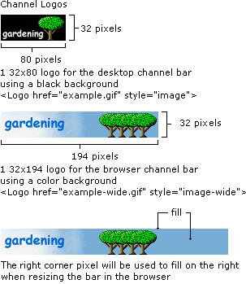
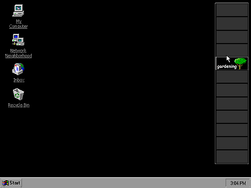
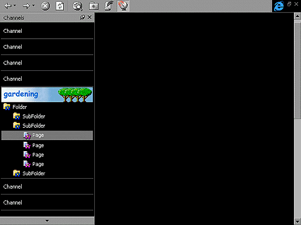
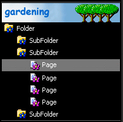
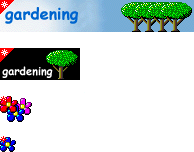

| ||||||
The guidelines listed in this section are provided to help Web publishers create useful and compelling logos that represent their channel content. When creating images, be aware that the logos are displayed with a fixed 256-color palette, regardless of the monitor's color depth. Therefore, using the Microsoft® Windows® halftone palette is recommended, if possible. The height (H) and width (W) of the images described in these guidelines are assumed to be in pixels. Also, changes in the logo images will not be detected unless the URL changes.
Microsoft® Internet Explorer 4.0 and later uses different logo sizes for channels displayed on the desktop and channels displayed inside the browser window. The desktop channel bar logo is 32H x 80W, and the Explorer Bar logo is 32H x 194W. When a user resizes the width of the Explorer Bar beyond 194 pixels, the remaining area on the right side of the 32H x 194W logo is filled in with the rightmost top pixel. If only the 32H x 80W image is provided, it is displayed in both places—on the desktop and inside the browser window. When displayed in the Explorer Bar on the browser, the remaining area on the right side of the logo is filled in with the same color as the leftmost top pixel. The 32H x 80W logo for the desktop must have a black background, while the logo for the browser should use a colored background. To specify the logos in the CDF file, the following format is used.
For the 32H x 80W logo:
<LOGO href="example.gif" STYLE="Image">
For the 32H x 194W logo:
<LOGO href="example-wide.gif" STYLE="Image-Wide">
For the 16H x 16W icon images:
<LOGO href="example-icon.gif" STYLE="Icon">

The desktop channel bar displays the smaller logo (32H x 80W) for each available channel. To match the visual elements used on the desktop, a black background is required for each logo. All logos in the desktop channel bar are shown at the same time. The following illustration shows the hot tracking behavior for when a user moves the mouse over a logo. As the cursor is placed on an image in the desktop channel bar, the border around the logo surfaces into a 3-D button. This behavior helps make the desktop channel bar look like a well-integrated part of the product.

Inside the Browser window, Internet Explorer 4.0 and later versions use the full-width logo (32H x 194W) in the Explorer Bar. By default, only the channel name is displayed in white text on a black background for each channel. However, when the user moves the mouse over an item, it will hot-track to show the logo for that item. Using a color background for the large logo is recommended. If a user clicks a channel to activate it, that logo remains visible. This allows users to easily determine the current channel because they aren't distracted with logos from other channels.

When designing your icons, use different images, colors, or shapes to indicate whether an item is a container for other subitems or is actual content. This will help the user discover your channel's content.

The channel bar provides the user with a 14H x 14W "gleam" to indicate when content has been updated. This gleam is a triangular overlay applied to the upper-left corner of a channel logo. When authoring images for any size, it's important not to place critical text or visual elements in this area, because it will be covered when the gleam is visible. Gleams are also overlaid on any 16H x 16W icon in the channel's hierarchy when that page has been updated. The gleam placed on icons is 7H x 7W.

Follow these guidelines when authoring Active Channel images:
Did you find this topic useful? Suggestions for other topics? Write us!
© 1999 Microsoft Corporation. All rights reserved. Terms of use.